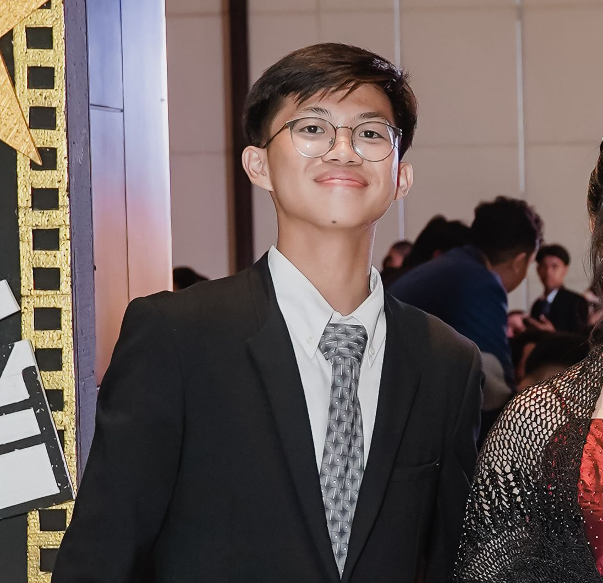

Open to Internships
↓Download CV
Blending design, data, and
human-centered thinking.
Hi! I’m Fidelio Bagas Prakoso, an Information Systems student at BINUS University specializing in Business Intelligence. I’m passionate about turning data into meaningful insights through data visualization, data analytics, and technology.
Beyond academics, I contribute as a Scholarship Mentor at BINUS University, supporting students through academic guidance while developing my communication, problem-solving, and teamwork skills.
Location
Depok, Indonesia
Experience
Project-Based
Specialization
Business Intelligence & Data Analytics